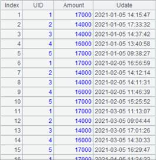
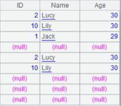

Description:
Fit together matrices using PLS technique.
Syntax:
pls(A,Y,n) Fit matrix A and matrix/vector Y using the PLS technique; matrix A contains more than one row and both A and Y should have same number of rows; n is the number of principal components. The type of result is determined by Y, that is to say, the function returns a matrix when Y is a matix and a vector when Y is a vector. The return result can be used as parameter F in pls(A,F) to perform a fitting
pls(A¡¯,F) Get the fitting object of another matrix having same number of columns; both A¡¯ and F can be a matrix or a vector. The function returns a matrix when F is a matrix. When F is a vector, the function returns a vector if A¡¯ is a matrix and a single value when A¡¯ is a vector. A¡¯ should have same number of columns as that of the corresponding A
Parameters:
|
A |
A matrix |
|
Y |
A matrix/vector |
|
n |
Number of principal components; the range of its values is 1<=n<=min(row count -1,column count). When the parameter is absent or out of range, its value will be automatically configured as the maximum in the above range |
|
A¡¯ |
A matrix/vector |
|
F |
A matrix/vector, the result returned by pls(A,Y,n) |
Return value:
A vector/single value/matrix
Example:
|
|
A |
|
|
1 |
[[4,6,2,4],[2,3,1,2],[1,1,1,-1]] |
Generate a matrix |
|
2 |
[1,0,-4] |
Generate a vector |
|
3 |
=pls(A1,A2,2) |
Fit matrix A1 and vector A2 using the PLS technique and return a vector; the number of principle components is 2
|
|
4 |
[[1,-2,1],[0,2,-8],[-4,5,9]] |
Generate a matrix |
|
5 |
=pls(A1,A4,2) |
Get the fitting result of matrix A1 and matrix A4 and return a matrix |
|
6 |
[[3,5,-2,8],[2,4,3,3]] |
Generate a matrix |
|
7 |
=pls(A6,A5) |
Get the fitting result of matrix A6 and matrix A5 and return a matrix  |
|
8 |
=pls(A6,A3) |
Get the fitting result of matrix A6 and matrix A3 and return a vector  |
|
9 |
[3,5,-2,8] |
Generate a vector |
|
10 |
=pls(A9,A3) |
Get the fitting result of vector A9 and vector A3 and return a single value
|